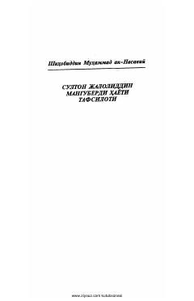

SJSulton Jaloliddin Manguberdining hayoti va tarixiy faoliyatiga bag'ishlangan muhim asar.
Mazkur kitobda buyuk sarkarda va hukmdor Sulton Jaloliddin Manguberdining hayoti, faoliyati hamda uning davridagi tarixiy voqealar tafsilotlari bayon etilgan. Asar o'rta asrlar Sharq tarixi va shaxslari haqida muhim ma'lumotlarni beradi.